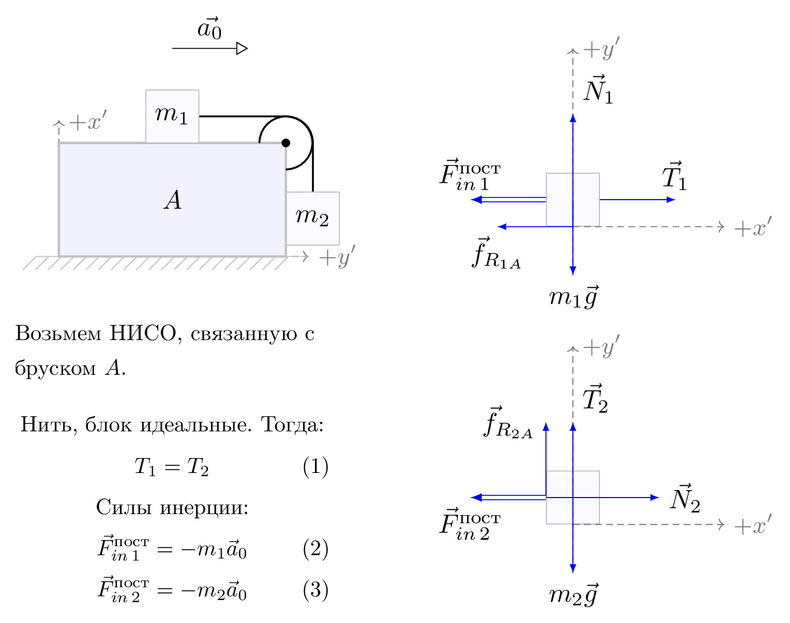

pre.tex
\documentclass[tikz]{standalone}\input{pre.tex}\begin{document}\begin{tikzpicture}[
force/.style={>=latex,draw=blue,fill=blue},
% axis/.style={densely dashed,gray,font=\small},
axis/.style={densely dashed,black!60,font=\small},
M/.style={rectangle,draw,fill=lightgray,minimum size=0.5cm,thin},
m2/.style={draw=black!30, rectangle,draw,thin, fill=blue!2, minimum width=0.7cm,minimum height=0.7cm},
m1/.style={draw=black!30, rectangle,draw,thin, fill=blue!2, minimum width=0.7cm,minimum height=0.7cm},
plane/.style={draw=black!30, very thick, fill=blue!5, line width=1pt},
% base/.style={draw=black!70, very thick, fill=blue!4, line width=2pt},
string/.style={draw=black, thick},
pulley/.style={thick},
interface/.style={draw=gray!60,
% The border decoration is a path replacing decorator.
% For the interface style we want to draw the original path.
% The postaction option is therefore used to ensure that the
% border decoration is drawn *after* the original path.
postaction={draw=gray!60,decorate,decoration={border,angle=-135,
amplitude=0.3cm,segment length=2mm}}},
]
\def\height{1.5cm}
\def\width{3cm}
\def\Ti{\vec{T}_1}
\def\Tii{\vec{T}_2}
\def\FINii{\vec{F}_{in\,2}^\text{пост}}
\def\FINi{\vec{F}_{in\,1}^\text{пост}}
\def\radius{0.35cm}
\matrix[column sep=1cm, row sep=0cm] {
% \draw[use as bounding box] (0,0) rectangle (1,1);
\begin{scope}%
[scale=1.2, transform shape]
\coordinate (base left) at (-\width/2,-\height/2);
\coordinate (top left) at (-\width/2,\height/2);
\coordinate (top right) at (\width/2,\height/2);
\coordinate (base right) at (\width/2,-\height/2);
\coordinate (top mid) at ($(top left)!0.5!(top right)$);
\draw[axis,->] (base left) -- ($(base right)+(0.3,0)$) node[right] {$+y'$};
\draw[axis,->] (base left) -- ($(top left)+(0,0.3)$) node[right] {$+x'$};
\draw[plane] (base left) -- (base right) -- (top right) -- (top left) -- cycle;
\draw[interface] ($(base left)-(0.3,0)$) -- ($(base right)+(0.3,0)$);
\path (top mid) node[m1, yshift=0.35cm] (m1) {$m_1$};
\path ($(base left)!0.5!(top right)$) node[yshift=0cm] (A) {$A$};
\draw[->,>=open triangle 60] (0,2) -- node[above,pos=0.5] {$\vec{a_0}$} (1,2);
\draw[pulley] ($(top right)-(0,\radius)$) arc (-90:180:\radius) coordinate (pulley);
\filldraw[fill=black] (top right) circle(0.05cm);
\draw[string] (m1.east) -- ++(1.15,0) arc (90:0:\radius)
-- ++(0,-1) node[m2] {$m_2$};
\end{scope}
&
\begin{scope}[scale=1.2, transform shape]
\node[m1,transform shape] (m1) {};
{[axis,->]
\draw (0,-1) -- (0,2) node[right] {$+y'$};
\draw (m1.south) -- ++(2,0) node[right] {$+x'$};
}
% Forces
{
\draw[force,->] (m1.south) -- ++(0,1.5) node[above right] {$\vec{N}_1$};
\draw[force,->](m1.south) -- ++(-1,0) node[below] {$\vec{f}_{R_{1A}}$};
\draw[force,->] (m1.east) -- ++(1,0) node[above] {$\vec{T}_1$};
\draw[force,double equal sign distance=2pt,->] (m1.west) -- ++(-1,0) node[above] {$\FINi$};
}
\draw[force,->] (m1.center) -- ++(0,-1) node[below] {$m_1\vec{g}$};
\end{scope}
\\
\node[draw=none,text width=5cm, line width=0mm] at (0,0.5) {
Возьмем НИСО, связанную с бруском $A$.
\begin{gather}
\nonumber \text{Нить, блок идеальные. Тогда:}\\
T_1=T_2\\
\nonumber \text{Cилы инерции:}\\
\FINi=-m_1\vec{a}_0\\
\FINii=-m_2\vec{a}_0
\end{gather}
};
&
\begin{scope}[scale=1.2, transform shape]
\node[m2,transform shape] (m2) {};
% Draw axes and help lines
{[axis,->]
\draw (0,-1) -- (0,2) node[right] {$+y'$};
\draw (m2.south) -- ++(2,0) node[right] {$+x'$};
}
% Forces
{
\draw[force,->] (m2.center) -- ++(0,1) node[above right] {$\vec{T}_2$};
\draw[force,->](m2.west) -- ++(0,1) node[left] {$\vec{f}_{R_{2A}}$};
\draw[force,->](m2.west) -- ++(1.5,0) node[right] {$\vec{N}_2$};
\draw[force,double equal sign distance=2pt,->] (m2.west) -- ++(-1,0) node[below] {$\FINii$};
\draw[force,->] (m2.center) -- ++(0,-1) node[below] {$m_2\vec{g}$};
}
\end{scope}
\\
%
};
\end{tikzpicture}\end{document}